There is no team behind this. Every stage below is work I do myself, which means nothing gets lost in a handoff and the visual logic stays consistent from the first shot to the last.
Story and script
Beat maps, scene breakdowns, and shot-by-shot screenplays with framing, staging, and delivery notes. Adapted from novels or written from scratch.
Image and motion
Character reference sheets, location plates, keyframe coverage across angles, and animation applied only to approved frames.
Sound and finish
Voice casting and narration, original score written for the episode, assembly edit, titles, recaps, teasers, and thumbnails. Delivered as a finished master.
SELECTED WORK
Turn Your Clips Into Episodes.
Full narrative episodes with recurring characters, recurring locations, and recurring wardrobe.
Jacob’s Love Ep.7 | On the Hook
From a contemporary romance serial adapted from my own novel, nine episodes and counting. Every episode starts as a shot-by-shot screenplay and goes through keyframes, animation, narration, and edit.
FORMATSerialized episode, 10–20 min
CAST3 recurring characters
PIPELINEChatGPT, Higgsfield, ElevenLabs, Suno
SCOREOriginal, written for the series
ROLEWriter, director, editor
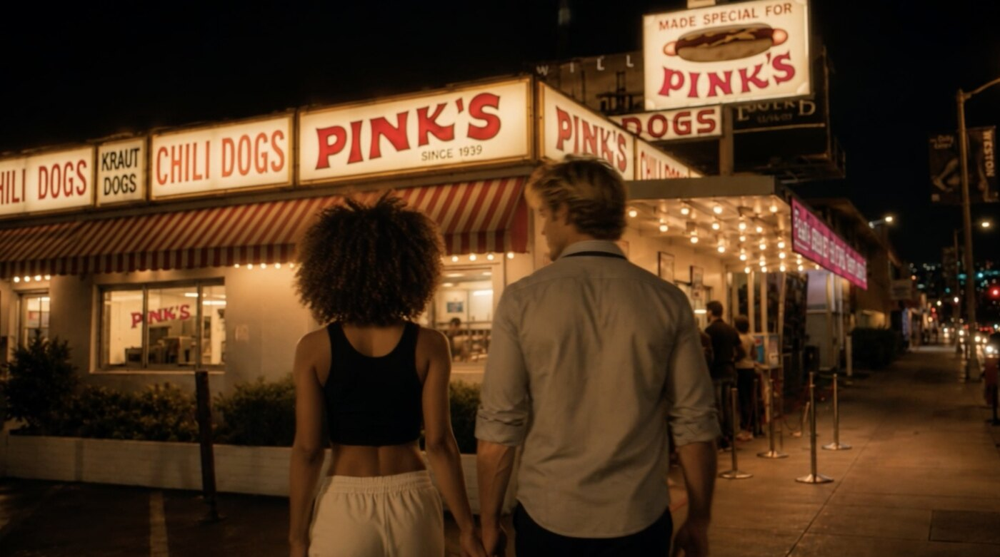
Jacob’s Love Ep.2 | A Couple of Kisses
The episode with the heaviest production load. Branded product placement staged inside generated footage, plus wardrobe built from real designer pieces rather than invented clothing, which means the garments had to survive every angle change without inventing new seams or buttons.
FORMATSerialized episode, 10–20 min
FEATURESProduct placement, designer wardrobe
SCOREOriginal, written for the episode
PIPELINEChatGPT, Higgsfield, ElevenLabs, Suno
ROLEWriter, director, editor
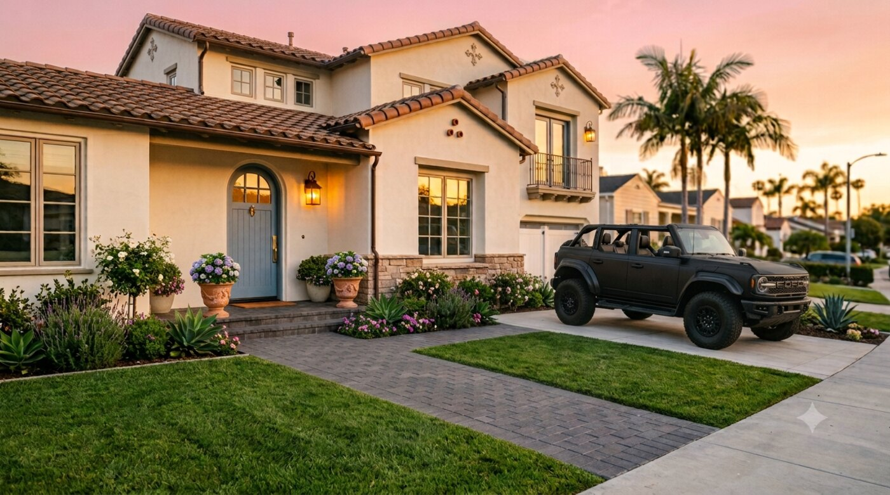
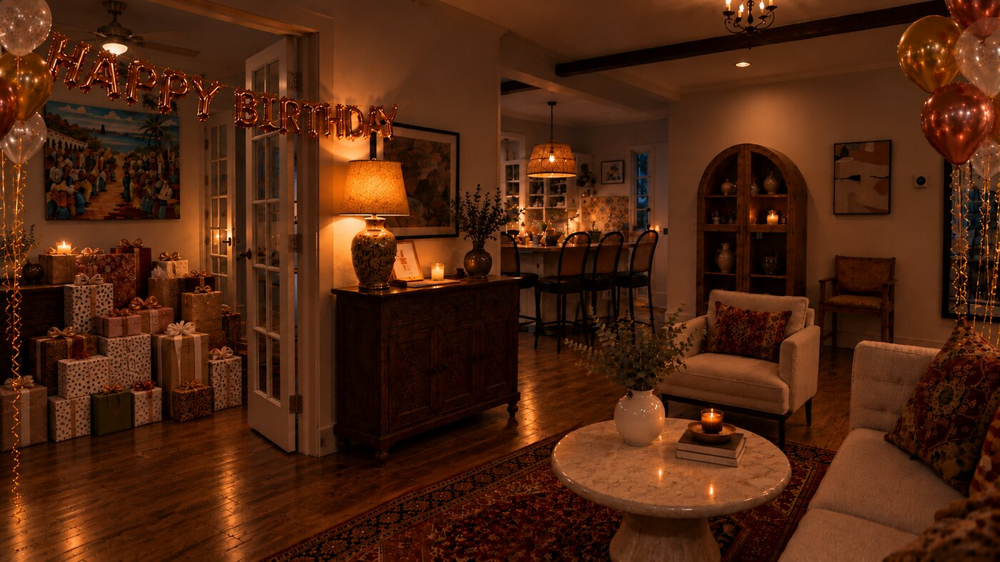
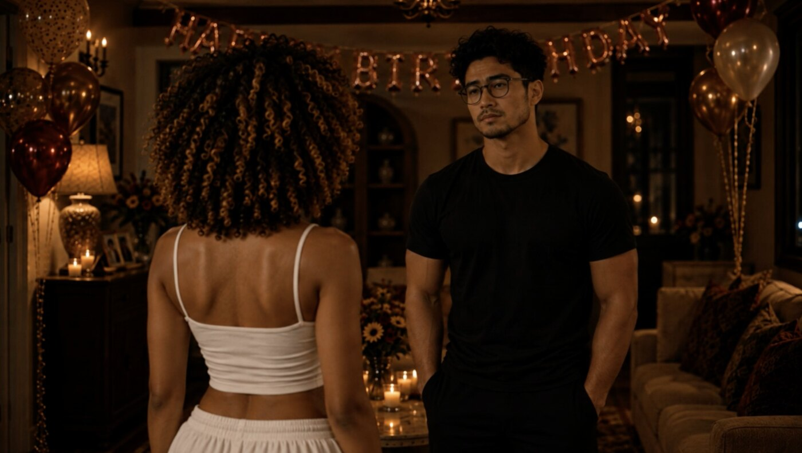
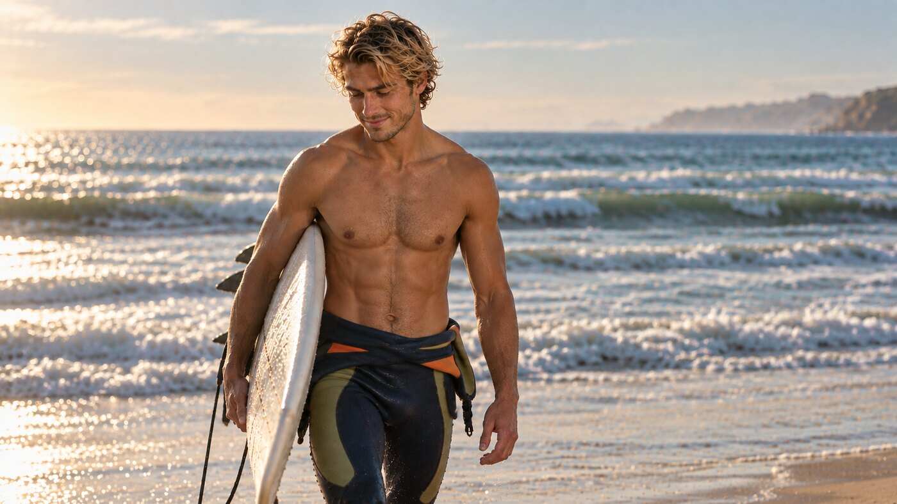
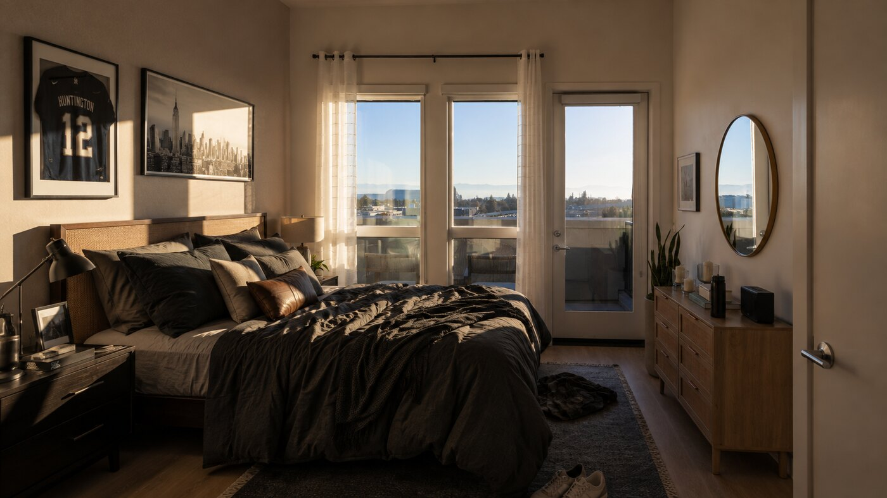
COMMERCIAL WORK
One spot, twice.
Both of these sell my own novel, and I wrote the script and built the music bed for each. The first one was my early attempt. The second is the same job done again after I understood what was wrong with the first. They are here together on purpose, because the distance between them is the part worth showing.
0:30
A River Flows
Current version
Thirty seconds, built in 4K. The room is lit rather than just visible: practical lamps, a dark kitchen behind, depth built into the frame. One subject instead of two, so the shot has somewhere to rest. The living room is a location plate I already had, which is the whole point of building plates.
RUNTIME30 seconds, 4K
SUBJECTA River Flows, my own novel
WROTEScript and music bed
ROLEWriter, director, editor
0:15
A River Flows
First version
My first attempt at the same brief. Flat overhead light, two subjects competing for the frame, and a cover card dropped in at the end rather than designed into the shot. I am showing it because knowing what is wrong with your own work is most of what gets it fixed, and the second version is what that fix looks like.
RUNTIME15 seconds, 4K
SUBJECTA River Flows, my own novel
WROTEScript and music bed
ROLEWriter, director, editor
CHARACTER REFERENCE
How I keep characters recognizable.
Holding a character together across a season is the hardest part of this work and the part I spend the most time on. Faces drift. Rooms rearrange themselves. Wardrobe invents buttons that were never there.
The method is reference discipline. Every character gets a sheet built before any shot is generated. Wardrobe gets written down to the strap and the clasp. Present-day plates stay separate from flashback plates. Every shot of a character loads from that sheet rather than from a fresh description.
It is not a solved problem and I would not claim otherwise. Drift still happens, and catching it and regenerating is part of the job. The discipline is what keeps it occasional instead of constant.
These are the working sheets behind Jacob's Love, exactly as I use them.
Jacob Astor
LEAD
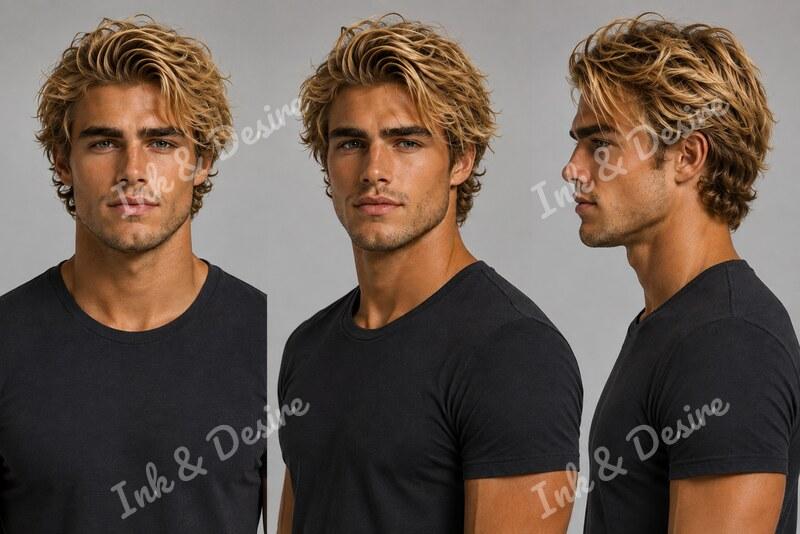
IDENTITY SHEET
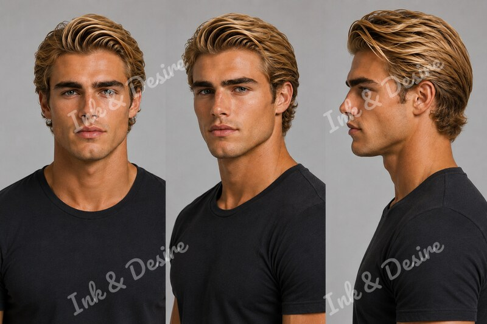
IDENTITY SHEET, ALTERNATE
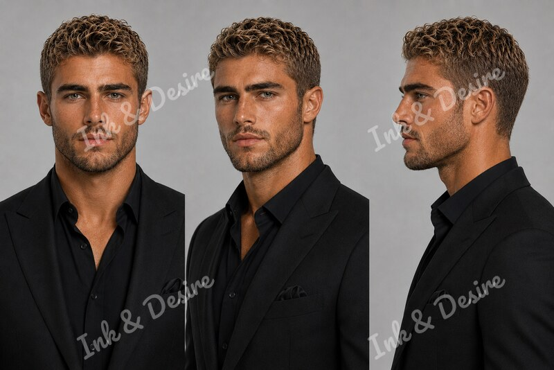
VARIANT, LOW CUT
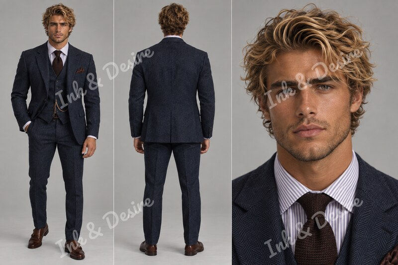
VARIANT, NEW YORK
Built at the start of the season. Every shot Jacob appears in loads from one of these sheets rather than from a fresh description.
Emi Finley
LEAD
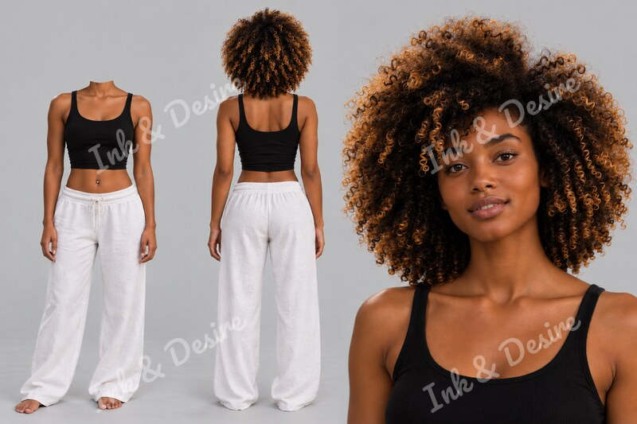
PRESENT DAY
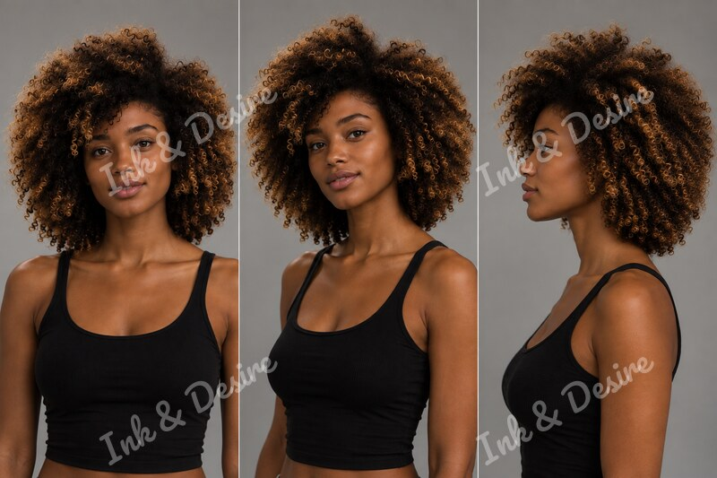
PRESENT DAY, ALTERNATE
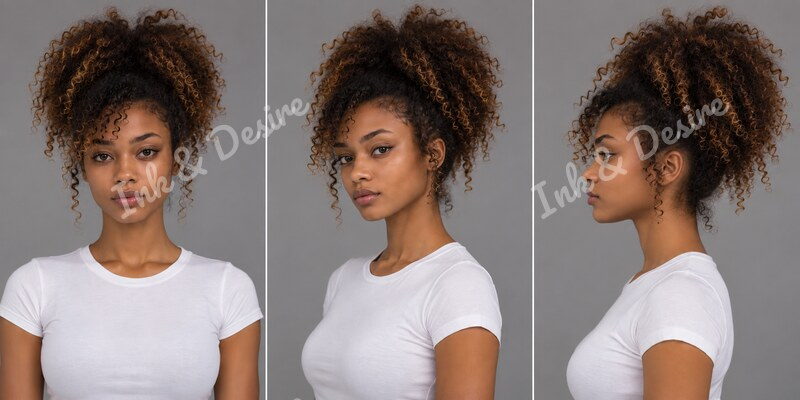
YOUNGER, SAME IDENTITY
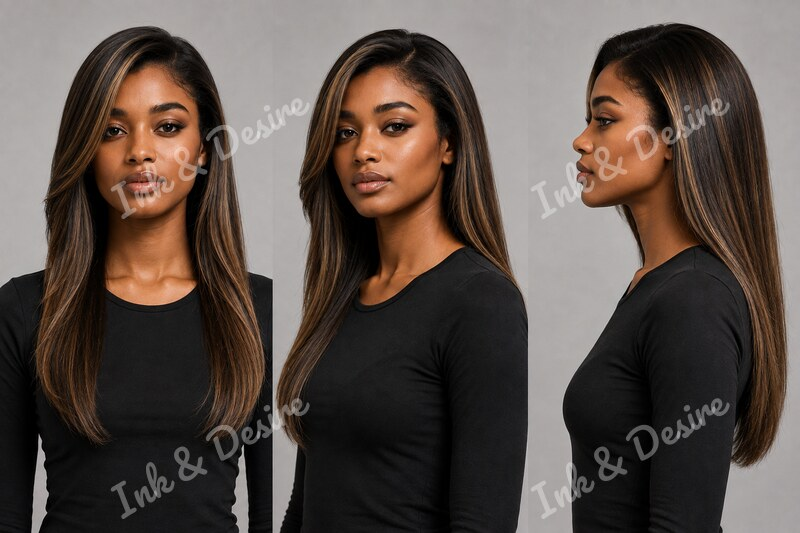
MEMORY SEQUENCES
Four sheets for one woman. Present day, a younger version for earlier timeline material, and a separate glam sheet for memory sequences. The sheets never get loaded into the same generation, so the eras stay distinct.
Sean Astor
SUPPORTING
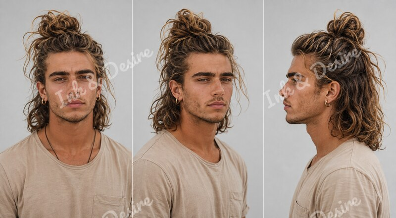
IDENTITY SHEET
Supporting cast gets the same treatment as the leads. A background character who changes face is just as obvious to a viewer.
Liam Harley
SUPPORTING
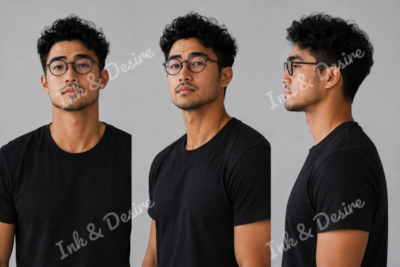
IDENTITY SHEET
Built before his first appearance, so there is something to return to across episodes made months apart.
Noah Harley
SUPPORTING
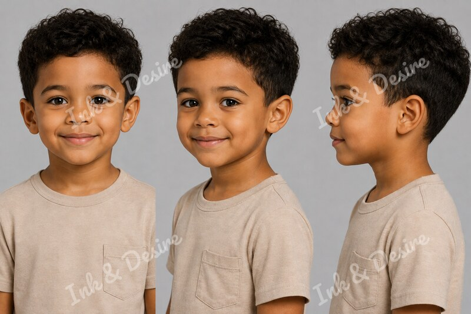
IDENTITY SHEET
Same process, same discipline, regardless of how many scenes the character carries.
PRODUCT PLACEMENT
Real products, placed in generated scenes.
Wardrobe and props sourced from actual brands, then rebuilt on my characters so the garment reads as the real item and not as something the model invented. Source photography on the left, the shot as it appears in the episode on the right.
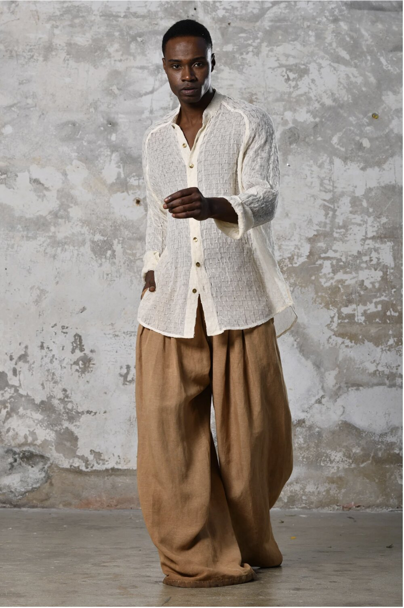
SOURCE, DESIGNER PHOTOGRAPHY
IN SCENE, JACOB’S LOVESECOND ANGLE
Hector Shirt
ZHE.NA.BIA
Worn by Sean Astor. The garment had to survive a change of body, a change of pose, and a move from flat studio light into low sunset interior light, without losing the waffle texture, the placket, the gold buttons, or the way the linen falls at the cuff.
PRODUCTHector Shirt
CHARACTERSean Astor
DETAILSTexture, buttons, collar, drape
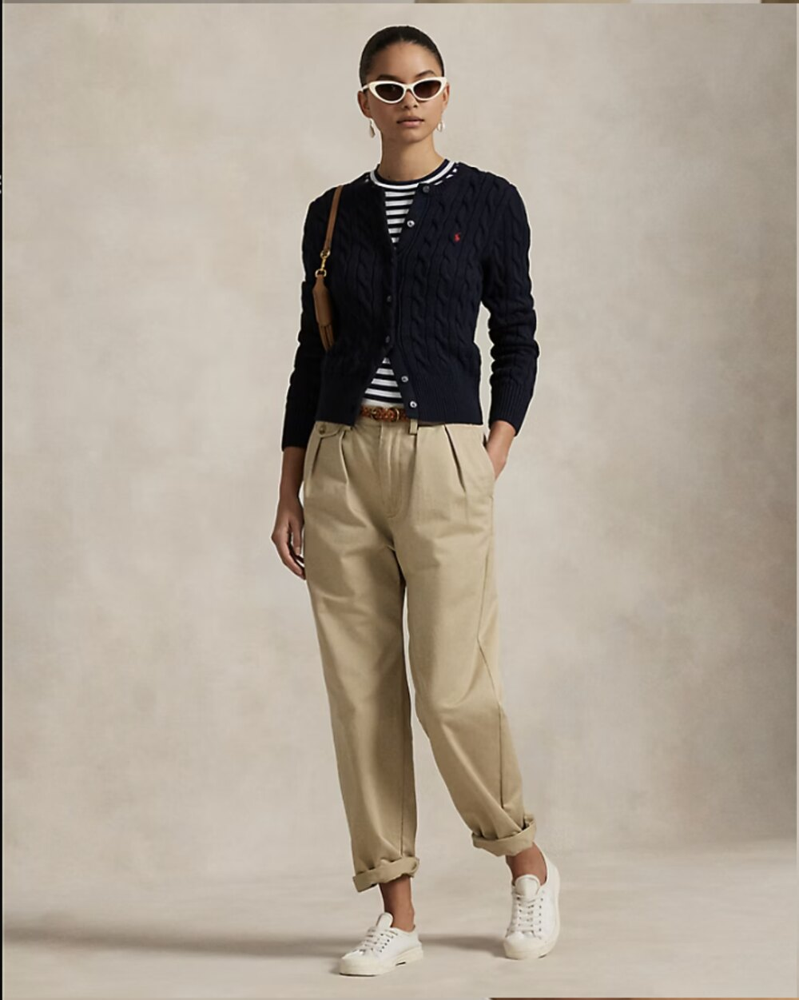
SOURCE, BRAND PHOTOGRAPHY
IN SCENE, JACOB’S LOVE
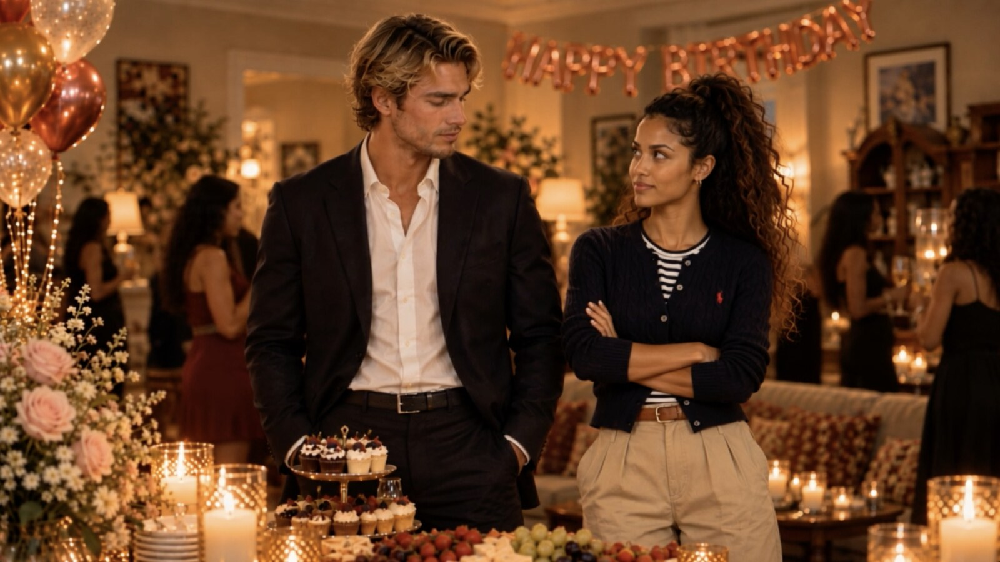
SECOND ANGLE
Cable-Knit Cotton Crewneck Cardigan
Ralph Lauren
Worn by River. This one is a styled look rather than a single garment: cardigan, breton stripe tee, leather belt, crossbody bag, pleated chinos. The cable pattern had to keep its repeat, the stripes had to stay even under the open cardigan, and the embroidered pony had to survive at a size where small logos usually dissolve.
PRODUCTCable-knit crewneck cardigan
CHARACTERRiver
DETAILSCable repeat, stripes, belt, logo
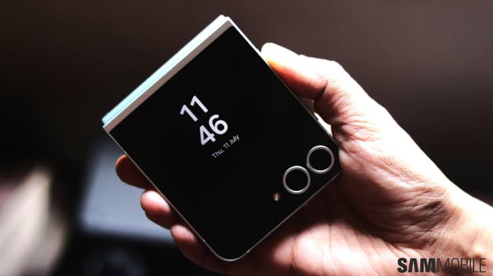
SOURCE, PRODUCT PHOTOGRAPHY
IN SCENE, JACOB’S LOVESECOND ANGLE
Galaxy Z Flip 6
Samsung
Held by Liam Harley. A device is less forgiving than clothing. The hinge line, the cover screen bezel, the two camera rings and their spacing all have to be right or the object stops reading as that phone. The cover screen is also showing a photograph of two other characters, so the shot contains a generated image inside a generated device inside a generated scene, and all three have to stay consistent at once.
PRODUCTGalaxy Z Flip 6
CHARACTERLiam Harley
DETAILSHinge, bezel, camera array, screen
PIPELINE
How an episode gets made.
Six stages, in order. The work that prevents drift happens in stages two and three, long before anything moves.
Break the story
Scene list, beat map, break points. Length and ending are settled before a single frame exists.
Build the references
Character sheets, wardrobe plates, location plates. Everything downstream points back to these files.
Write the shot script
Every shot gets a slug, a framing, a delivery note, and a list of which reference images load with it.
Generate keyframes
Coverage shot by shot. A new location is built once, then the keeper becomes the plate for every other angle in that room.
Animate and voice
Motion applied to approved keyframes only. Narration recorded against a locked script so the cut times out correctly.
Cut and deliver
Assembly, sound, titles, recap and teaser, thumbnail. Master file plus project files.
STACK
What I work in.
Tools change every few months. The process is what transfers. Still, here is what I am currently fluent in.
Image
ChatGPT image generation
Midjourney
Reference sheet workflows
Motion
Higgsfield
Kling
Audio
ElevenLabs v3
Suno, original score
Voice casting and direction
Post and delivery
Thumbnail and title design
YouTube publishing
ABOUT
Writer first, which is why the video works.
I write fiction and adapt my own novels into video. That background is the reason my episodes hold attention past the first thirty seconds: the story was structured before any image existed, not assembled afterward from whatever the generator produced.
My novels and the channel both publish under the pen name Ryle Lucas, so that is the name you will find on the work itself.
Based in Huntsville, Alabama, working remote. Available for production work, keyframe work, and pipeline consulting.